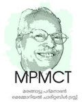

|  |
|
Marangattu Padmanabhan, a freedom fighter and follower of Gandhian ideology in thoughts and deeds, was born in 1922 (1097 Thulam 15) as the son of Kaliyan and Velumbi at Marangattu House in Adinad village of Karunagappally Taluk. He had his schooling from Changankulangara Srirama Vilasam High School.
Padmanabhan began participating in the freedom struggle for India’s independence since 1938 and he was arrested, beaten and sent to prison several times for participating in strikes. In 1939, he joined the association of naval workers Akila Thiruvithamkoor Navika Thozilaali Sangham which was the fourth registered group under the Trade Union Act and later served as its General Secretary. In 1941, he became a member of the Kayamkulam Division of Thiruvithamkoor State Congress and then its Secretary. In 1942, as part of Quit India Movement, he violated the prohibition order and spoke at Puthiyakavu ground in Karunagappally for which he was imprisoned and beaten brutally in different prisons of Kollam district. After his release from imprisonment in Central jail for 14 months, he started working with Kannanthodath Janardhanan Nair and was appointed as the General Secretary of the Akhila Kerala Naval Labors Union of Kochi in 1951. Padmanabhan was arrested several times for conducting protests in different parts of the state such as Aluva, Kottapuram, Cherthala, Thrissur, Kottayam and Kollam demanding welfare measures for naval laborers.
He married Sulochana, the elder daughter of Paappu and Bhavani, Illikkal Parambil, Mattanchery on 5 May 1954. On the day of his wedding, police officers came to arrest him in connection with the issue related to naval laborers and the police team waited outside while the marriage took place. He was arrested the next day morning and he continued his social services even after his release. Padmanabhan was also a writer who used his writings as a tool to express his agitation towards a discriminating system asrevealed in his work Kakka, published in 1990 which discusses the hardships of downtrodden people. His another remarkable work is Jailmuttathe Rosapoovu, a poem which discusses his intense emotions.
Padmanabhan has served as the State Committee Member of Kerala Socialist Party and as the Secretary of Kollam District Committee and occupied positions such as Kollam District Development Council Member and President of Kerala Freedom Fighters Association. When Kerala Socialist Party merged with Janata Dal, he was elected as the State Committee Member of Janata Party. In 1980s, he became CPM Local Committee Member, Kulasekarapuram Panchayat Member and the President of Sadhu Jana Sangham Kattil Kadavu. In 1972 on the occasion of India’s twenty fifth independence day celebration, the then Prime Minister of India, Indira Gandhi awarded Marangattu Padmanabhan Tamrapatra as an honour for his services to the nation and during the fiftieth independence day celebration in 1997, then the President of India K. R Naryanan invited him to Rashtrapati Bhavan and honoured him in the event.
After an accident, he left politics to spend the rest of his life with family and dear ones. Though he suffered from Alzheimer's, even when his family and friends became strangers due to memory loss, his love and dedication for the nation never faded. He passed away at the age of 98 on October 25, 2019 and the country bid him farewell with state honours in the presence of dignitaries where politicians as well as officials paid him their gratitude.